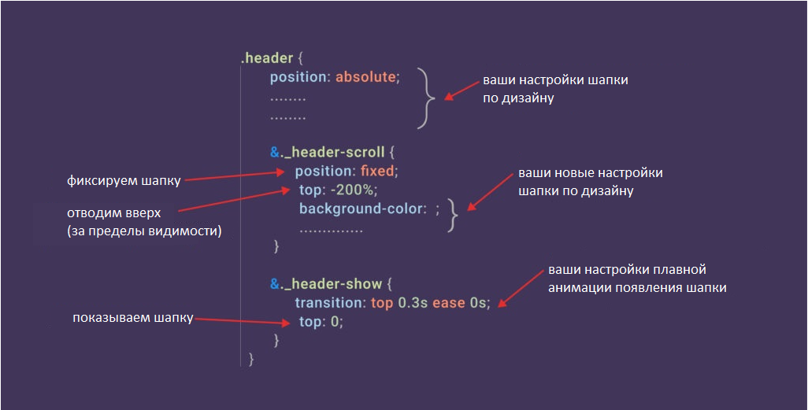

Подключение функционала
[JS] В файле <>js/app.js раскомментировать строку flsScroll.headerScroll();
Использование функционала
[HTML] До тегу header, додаємо HTML-атрибут data-scroll, у значенні атрибуту вказуємо через яку кількість прокручених вниз пікселів нам необхідно додати клас до header (зазвичай за висотою шапки, за замовчуванням 1px).

Теперь как только пользователь прокрутит вниз указанные выше 120px header добавится технический класс _header-scroll. Этот класс будет присутствовать до тех пор, пока пользователь не вернется вверх (не доходя до 120px).
Результат работы:

[HTML] Далее в тег header добавляем еще один HTML-атрибут data-scroll-show. Как только пользователь остановит прокрутку к тегу header, через некоторое время прибавится еще один технический класс _header-show. Этот класс исчезает только в момент прокрутки вниз. При прокручивании вверх класс не исчезает.
Результат работы:

Можно изменить время задержки добавления класса _header-show. Для этого следует указать значение атрибута data-scroll-show в миллисекундах (по умолчанию 500)

[SCSS] Теперь осталось отредактировать свойства этих подключенных классов в scss. Например:
Расположение и дополнительные данные
Функционал находится в js/files/scroll/scroll.js. Название функции headerScroll()